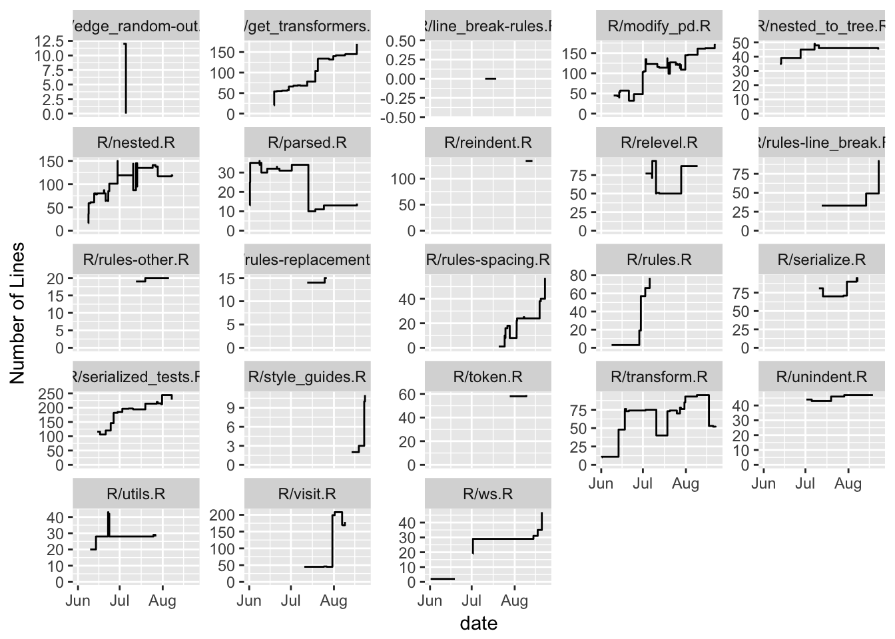

This vigette aims to summarize the contributions made to styler through Google Summer of Code 2017.
The author
The activity during GSOC can be grouped into the following steps:
+, %>% etc.), braces { and (. the use of raw indention, allowing for token-dependent re-indention.<- for =), line break rules (invasive and non-invaive), token insertion (() in function calls within pipes), RStudio Addins, styling of comments, styling of a single file, public api redesign, spacing around more operators (colons, commas, infix operators, bang-bang).The list above is not comprehensive and covers only the large contributions. Always along with coding, documentation and tests were provided.
We can use the package gitsum to perform an analysis of the GitHub repository.
library("gitsum")
library("tidyverse")
log <- git_log_detailed() %>%
filter(date > as.Date("2017-06-01"), date < as.Date("2017-08-31"))We can see that the vast majority of the commits in this period comes from the student and a few from the main mentor.
log %>%
group_by(author_name) %>%
count()## # A tibble: 2 x 2
## # Groups: author_name [2]
## author_name n
## <chr> <int>
## 1 Kirill Müller 53
## 2 Lorenz Walthert 342We can also look at how the number of lines in the different files eveolved
lines <- log %>%
add_line_history()
r_files <- grep("^R/", lines$changed_file, value = TRUE)
to_plot <- lines %>%
filter(changed_file %in% r_files) %>%
group_by(changed_file) %>%
mutate(has_changed = n() > 1) %>%
filter(has_changed)
ggplot(to_plot, aes(x = date, y = current_lines)) +
geom_step() +
scale_y_continuous(name = "Number of Lines", limits = c(0, NA)) +
facet_wrap(~changed_file, scales = "free_y")
The total number of insertions and deletions by the author is
log %>%
filter(author_name == "Lorenz Walthert") %>%
summarize(sum(total_insertions) + sum(total_deletions)) %>%
pull()## [1] 24096Which still contains many insertions and deletions in some files that were generated as a biproduct, so let’s focus on the code in the R directory.
log %>%
unnest() %>%
filter(dirname(changed_file) == "R") %>%
summarize(sum(insertions) + sum(deletions)) %>%
pull()## [1] 5459